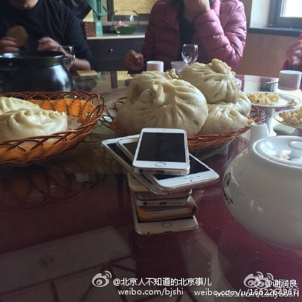

还真是这样。地铁上人人举个手机玩，但一排看过去没有一个iPhone。我掏出个iPhone都感觉好像很另类要被人看一眼一样。 //@头条新闻:#列国志#：为什么韩国人不太爱用iPhone---:抱歉，作者已设置仅展示半年内微博，此微博已不可见。
全是iPhone耶。另外体制内吃的这一盆大包子很有喜感啊。 //@阿忆:上交手机干啥，食不语，都不说话不就行了。 //@忆闻官微: 以后是手表、眼镜了怎么办？@北京人不知道的北京事儿:#事儿#【】@谢润良：现在与体制内的朋友吃饭聊天，同聚者一律先上交手机。 